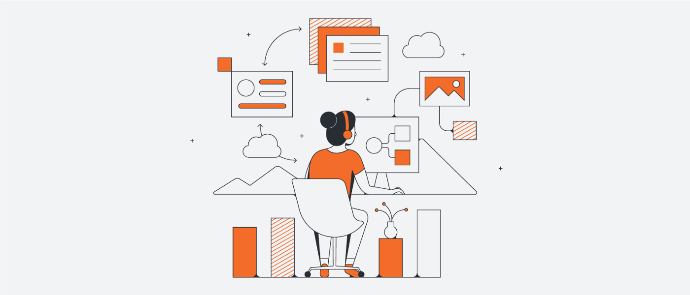
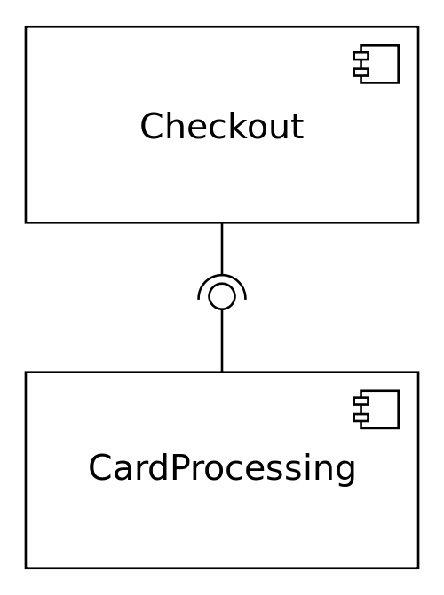

观其设计知其人
A MAN is KNOWN by the DESIGN he keeps
原文:Most Useful Software Architecture Patterns by Shadman Jamil

分层模式 (Layered Pattern (n-tier))
分层架构模式是最常见的模式之一。分层模式背后的理念是，具有相同功能的组件将被组织成水平层。因此，每一层在应用程序中都扮演着特定的角色。
在这种模式中，我们对应用程序可以拥有的层数没有限制。在这方面，我们还提倡关注点分离的概念。分层模式风格抽象了整个软件的视图；同时提供足够的细节，以了解各个层的角色和职责以及它们之间的关系。分层模式的典型实现如下：
- UI展示层(UI / Presentation Layer): 渲染并运行用户界面，向服务器应用程序发送请求。
- 应用层(Application Layer): 包含表示层、应用程序层、域对象层和持久化层。
- 域对象层/业务层(Domain / Business Layer): 该层包含所有业务逻辑、实体、事件和其他包含业务逻辑的对象类型。
- 数据库层(Database Layer): 这是数据层，用于持久化数据，应用服务器将使用这些数据。
例子: 桌面应用程序、电子商务、web应用程序等。
参考例子： go-clean-arch
客户端-服务器模式 (Client-Server Pattern)
这是最简单的架构模式，由一台服务器和多个客户端组成。这种模式是一种分布式架构，在资源/服务的提供者（称为服务器）和服务请求者（称为客户端）之间划分任务/工作负载。
在客户端-服务器模式中，当客户端向服务器发送数据请求时，服务器接受请求的进程，并向客户机发送所需的数据。客户不共享他们的任何资源。

例子: Email、文档共享、银行等
事件总线模式 (Event-Bus Pattern (Event-Driven Architecture))
该模式是一种分布式异步体系架构模式，用于创建高度可扩展的响应式应用程序。适用于从小型到复杂的各级应用程序技术栈。此模式的主要思想是异步传递和处理事件。
这个模式包含四个组件:
- 事件源(Event Source)
- 事件监听器(Event Listener)
- 通道(Channel)
- 事件总线(Event Bus)
源将消息发布到事件总线上的特定通道。监听器订阅特定的频道，监听器可以获取发布到其订阅的频道的消息。
例子: 电子商务、手机应用程序、通知服务等
代理人模式(Broker Pattern)
此模式可用于构造具有通过远程服务调用进行交互的解耦组件的分布式系统。代理组件负责协调组件之间的通信；例如转发请求，以及传输结果和异常。
服务器将其能力（服务和特性）发布给代理(Broker)。客户端向代理请求服务，然后代理将客户端的请求重定向到合适的服务。
例子: 消息Broker程序，如Apache ActiveMQ、Apache Kafka、RabbitMQ、JBOSS Messaging等
微服务模式 (Microservices Pattern)
在这种模式中，服务通过使用HTTP/REST等同步协议或AMQP（高级消息队列协议）等异步协议进行通信。服务可以独立开发和部署，每个服务都有自己的数据库。服务之间的数据一致性是通过使用Saga模式（一系列本地事务）来维护的。
例子: 可以在许多用例上实现，尤其是广泛的数据管道处理上
点对点模式 (Peer-to-Peer Pattern)
在通用客户端-服务器体系架构中，多个客户端与中央服务器通信。但P2P模式由分散的对等网络组成。
在这种模式中，节点的行为类似于客户端和服务器。对等点既可以作为客户端向其他对等点请求服务，也可以作为服务器向其他对等点提供服务。
P2P网络在节点之间分配工作负载，所有节点贡献并消耗网络中的资源，而不需要集中的服务器。对等方可能会随着时间动态地改变其角色。
例子: 文件分享网络、多媒体协议PDTP,P2PTV、比特币、区块链等
黑板模式(Blackboard Pattern)
这种模式对于不知道确定性解决方案策略的问题很有用。
所有部件都可以接触到黑板。组件可能会产生新的数据对象，这些对象将被添加到黑板上。组件在黑板上寻找特定类型的数据，并通过与现有知识源的模式匹配找到这些数据。
这个模式包含三个组件：
- 黑板(blackboard): 含解决方案空间中的对象的结构化全局内存
- 知识源(knowledge source:):具有自己表示形式的专用模块
- 控制组件(control component):选择、配置和执行模块。
例子: 速度识别、蛋白质结构识别、声纳信号解释、机器学习程序等。
组件模式 (Component-based Pattern)
基于组件的软件工程（Component-based software engineering，简称CBSE）或基于组件的开发（Component-Based Development，简称CBD）是针对系统的广泛功能，进行关注点分离的软件工程方式。此方式是以复用为基础的作法，定义、实现许多松耦合的独立组件（Component），再将组件组合成为系统。此作法的目的是希望在软件本身的短期益处以及开发软件组织的长期益处之间获取平衡。
一旦组件进行了划分，可以将组件分布式的开发部署，就会演化成面向服务或者微服务的架构。

例子: 常见大型项目中或者单个服务中。
管道模式 (Pipes 和 filters)
管道(pipeline)由一系列处理元素（进程、线程、协同程序、函数等）组成，每个元素的输出都是下一个元素的输入；这个名字类似于一个物理管道。通常在连续元素之间提供一定量的缓冲。在这些管道中流动的信息通常是记录流、字节流或比特流，管道中的元素可以称为过滤器(filter)；这也称为管道和过滤器设计模式。将元素连接到管道中类似于函数合成。
管道模式可以将数据的处理解耦，并且可以动态的增加或者删除特定的处理流程。每个处理单元可以结合下面插件模式，实现定制化。
例子: 多任务操作系统、数据处理程序等。
插件模式
在计算技术中，插件（或插件、外接程序、外接程序、外接程序或外接程序）是一种软件组件，用于向现有计算机程序添加特定功能。当程序支持插件时，它会启用自定义功能。
插件模式可以方便对程序进行扩展，以及动态实现功能的开启和禁用等功能，方便进行定制化。
例子: IDE程序如Eclipse，IDEA Intellj、网络应用程序入netty等。